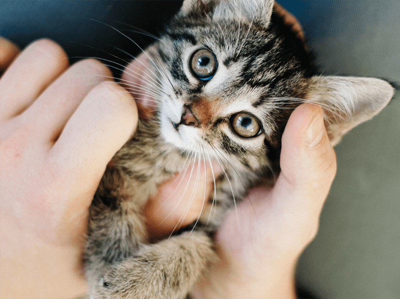

GATINHOS
CURIOSIDADES SOBRE OS GATOS

Um gato consegue ouvir sons de alta frequência,
cerca de 2 oitavas acima de qualquer humano.
Um gato consegue correr a 49 km por hora, em curtas distâncias.
Um gato salta 5 vezes à sua altura num único salto.
Alguns gatos já sobreviveram a quedas de 20 metros,
devido ao reflexo de endireitamento.